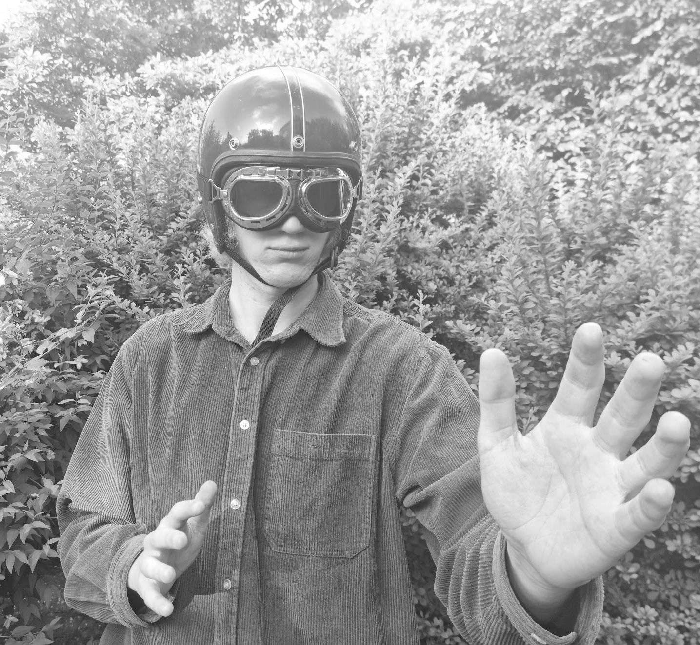
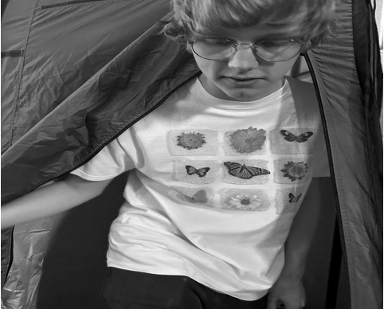
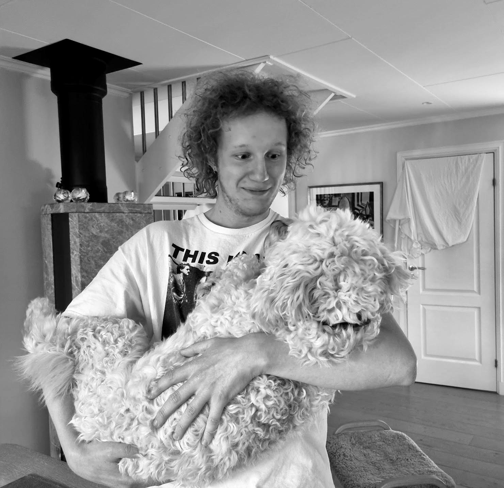
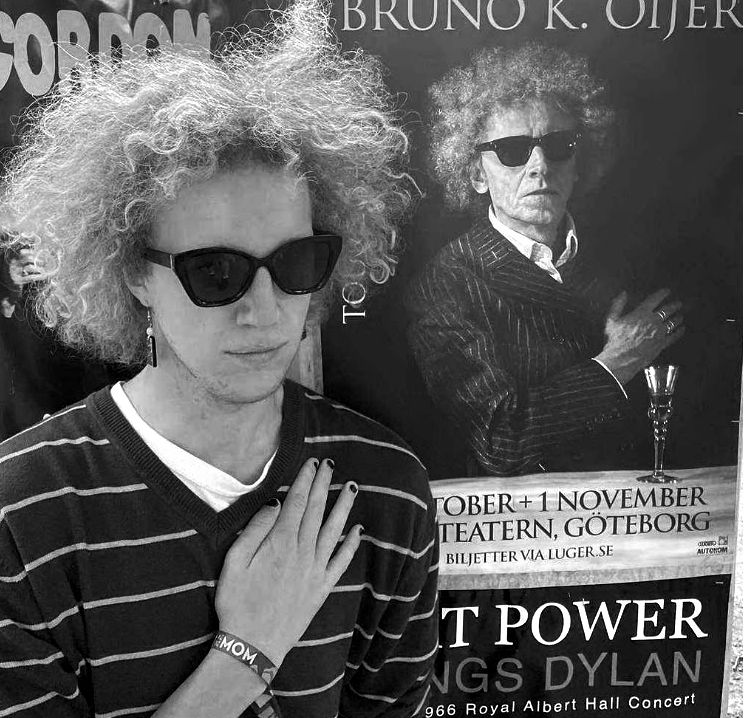

Senaste nytt
Allan får ytterligare en gratis gitarr från mannen i Alingsås
Redaktionen · 7 oktober 2026

I en oväntad och mycket välkomnande vändning har Allan tilldelats ännu en gratis gitarr från mannen i Alingsås. Redaktionen kan nu bekräfta att den extra instrumentet, som enligt uppgift skall levereras med ett leende och ett stort mått av offentligt samvete, kommer att användas för att skingra den rådande musikaliska bristen i Allan Yheter.
Officiellt utlåtande från team SF
Redaktionen · 7 oktober 2026

Officiellt utlåtande från Simon Frantzich befattande 『ORVARS 23-ÅRSKALAS 』, som förmedlat via Allan Yheter inc. tidigare i förmiddags: Ärade Orvar, samt hela den samlade klientel som ämnar infinna sig vid Orvars tjugotreåriga födelsedagsfest. Med hjärtat nedtyngt av den djupaste förtvivlan och skammen, måste jag härmed tillkännagiva att min medverkan vid Orvars 23-årskalas tillställningen för närvarande svävar osäkert. Mitt kontrakt med det multinationella gitarrmusik konglomeratet www.nettle.skin tvingar mig nämligen, genom såväl juridiskt som moraliskt tvivelaktiga villkor, att densamma afton klockan tjugo noll noll framträda med rockmusik på andralånggatans ökända The Abyss estrad. Att dras på marken, skrikandes gråtandes och snorig till gitarrmusikens obevekliga penningvälde framför Orvars tjugotreåriga jubileumsfest känns som om mitt hjärta vore inlåst i en fågelbur och jag svalde nyckeln av misstag. Ty en kamrat fyller 23 blott en gång om livsstiden. Måhända kan jag, om ödet och de multinationella intressena så tillåter, “komma till Orvars hus senare eller ses ute”.
Allans Höfner kan komma på torsdag
Redaktionen · 7 oktober 2026

Det ryktas att Allans Höfner-gitarr kan anlända redan på torsdagen den 8 oktober. Redaktionen följer utveckningen noga och kommer rapportera så snart paketet är i Allan händer.
Allans Höfner åter försenad
Redaktionen · 5 oktober 2026
Allan har fortfarande inte fått sin gitarr efter år och dagar av väntan. Staten har ingen kommentar. Nettle.skin hotar med bojkott av mannen i Alingsås som har gitarren.
Allan spelar på Abyss den 10 oktober
Redaktionen · 5 oktober 2026

Allan ger en spelning på Abyss, tillsammans med nettle.skin lördagen den 10 oktober 2026. Boka in datumet – mer information om kvällen kommer när den finns tillgänglig.
Allan världsmästare i Mario Kart 8 “Bull” på Baby Park
Redaktionen · 5 oktober 2026
Allan har vunnit världsmästerskapet i Mario Kart 8-kategorin “Bull” på Baby Park. Segern säkrades efter en intensiv final där Allan visade prov på både precision och kyligt fokus.